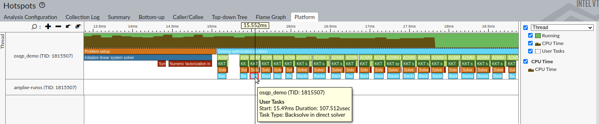

Profiling¶
OSQP includes two mechanisms for measuring the amount of time spent in the solver:
Basic profiling - provides simple measurements of start/stop times for the solver
Advanced profiling - Annotates regions of the code so external profilers (e.g. NVidia Nsight, Intel VTune, etc.) can measure the time of each part of the solver.
Basic Profiling¶
Basic solver profiling is enabled by the OSQP_ENABLE_PROFILING CMake build option, and uses the system’s
clock to time the setup and solve phases.
The runtime for the solver is displayed alongside the solver status when the solver finishes, and is also contained
inside fields of the OSQPInfo structure.
Advanced Profiling¶
Advanced solver profiling is available with the use of the following external tools:
While these profilers can be used with normal builds of OSQP, using the OSQP CMake build option
OSQP_PROFILER_ANNOTATIONS will enable section annotation, telling the profiler when sections
of the code start/end to allow more fine-grained timing of individual sections of the various solver phases.
At runtime, the OSQP profiler annotations are controlled using the OSQPSettings::profiler_level
settings variable.
This setting can take three different values:
0- Disable all annotation information1- Annotate only OSQP ADMM sections2- Annotate both OSQP ADMM sections and underlying linear algebra sections
NVidia Nsight¶
When using the NVidia CUDA algebra backend with the profiler annotations enabled, only the NVidia Nsight
profiler should be used.
OSQP uses the NVidia NVTX library library to report solver sections, which is selected using the
OSQP_PROFILER_ANNOTATIONS=nvtx CMake option during configuration.
Once compiled with the NVTX library support, OSQP will report profiling information when run using the NVidia Nsight
profiler tool. The timing information will be namespaced into the osqp domain, and is reported in the NVTX ranges
section of any reports produced.
Command line profiling¶
To use the command line to profile the demo executable with the CUDA algebra and report the OSQP timings, the following should be run on Linux:
nsys profile -o <report_name> osqp_demo
nsys analyze <report_name>.nsys-rep
nsys stats --report nvtx_sum <report_name>.sqlite
This will then report all the timing information for the OSQP sections of the code in a table on the command line, similar to the one shown below.
** NVTX Range Summary (nvtx_sum):
Time (%) Total Time (ns) Instances Avg (ns) Med (ns) Min (ns) Max (ns) StdDev (ns) Style Range
-------- --------------- --------- ------------- ------------- ----------- ----------- ------------ ------- ---------------------------------------
47.8 337,159,170 1 337,159,170.0 337,159,170.0 337,159,170 337,159,170 0.0 PushPop osqp:Problem setup
13.1 92,137,833 1 92,137,833.0 92,137,833.0 92,137,833 92,137,833 0.0 PushPop osqp:Solving optimization problem
9.4 66,362,729 94 705,986.5 466,710.5 278,144 13,770,989 1,435,295.6 PushPop osqp:Solve the linear system
9.2 64,993,272 90 722,147.5 540,812.5 352,410 14,033,099 1,448,686.7 PushPop osqp:ADMM iteration
8.4 59,295,017 90 658,833.5 482,775.0 295,428 13,872,670 1,437,104.2 PushPop osqp:KKT system solve in ADMM iteration
5.4 37,863,537 1 37,863,537.0 37,863,537.0 37,863,537 37,863,537 0.0 PushPop osqp:Problem data scaling
2.4 17,114,751 2 8,557,375.5 8,557,375.5 877,863 16,236,888 10,860,470.7 PushPop osqp:Initialize linear system solver
2.0 13,913,196 1 13,913,196.0 13,913,196.0 13,913,196 13,913,196 0.0 PushPop osqp:Solution polishing
1.3 9,058,039 301 30,093.2 27,691.0 23,970 88,999 8,018.7 PushPop osqp:Matrix-vector multiplication
0.8 5,615,895 90 62,398.8 55,515.5 47,176 158,284 19,590.5 PushPop osqp:Vector updates in ADMM iteration
0.2 1,712,233 90 19,024.8 16,265.5 14,119 72,884 7,576.9 PushPop osqp:Projection in ADMM iteration
GUI Profiling¶
To use the NVidia Nsight GUI to profile OSQP, ensure that the Collect NVTX trace project option is selected, and the
osqp domain is included in any NVTX domain filters that are setup.
Then, the OSQP sections will be shown on the timeline, and all the OSQP sections and events can be seen in the Events view.
A sample of the Nsight GUI with OSQP section information included is shown below.

Intel VTune¶
When using CPU-based backends, OSQP can be profiled using the Intel VTune profiler.
OSQP integration with VTune is enabled using the OSQP_PROFILER_ANNOTATIONS=itt CMake build
option, which enables the ITT (Instrumentation and Tracing Technology APIs) library for reporting section
information.
OSQP reports the various parts of the solver as a Task under the :osqp domain.
GUI Profiling¶
To use Intel VTune to profile OSQP with the profiler annotations, run a Hotspot analysis, and ensure the Analyze user tasks, events and counters option is selected. Once run, the OSQP annotations can be seen in the application’s trace in the Platform timeline view, and also in the tooltip when the mouse hovers over an item in the timeline, as shown below.
More exact information about the various timings and all the function calls in each part of the solver can be viewed on the Bottom-up tab of the analysis window, with the Task Type / Function / Call Stack grouping, as shown below.

AMD OmniTrace¶
OSQP can be profiled using the AMD OmniTrace profiler, where OSQP will use the OmniTrace user API
to report sections of the code for timing. To enable the section reporting, use the OSQP_PROFILER_ANNOTATIONS=omnitrace
CMake option during configuration.
OmniTrace uses the command line to profile and report the OSQP timings.
To build and run an instrumented OSQP executable, the following should be run on Linux (replacing osqp_demo with
the desired program):
omnitrace-instrument -l --min-instructions=8 -o -- ./osqp_demo
omnitrace-run --profile -- ./osqp_demo.inst 20 4 100
After running, this creates a new directory containing the output, with a directory for each run inside. The timings for each section of the code can be viewed in the wall_clock.txt file, with a machine-readable timing report in the wall_clock.json file. A sample wall_clock.txt output is shown below.
|--------------------------------------------------------------------------------------------------------------------------------------------------------------------------|
| REAL-CLOCK TIMER (I.E. WALL-CLOCK TIMER) |
|--------------------------------------------------------------------------------------------------------------------------------------------------------------------------|
| LABEL | COUNT | DEPTH | METRIC | UNITS | SUM | MEAN | MIN | MAX | VAR | STDDEV | % SELF |
|-------------------------------------------------------|--------|--------|------------|--------|----------|----------|----------|----------|----------|----------|--------|
| |0>>> osqp_demo.inst | 1 | 0 | wall_clock | sec | 0.001535 | 0.001535 | 0.001535 | 0.001535 | 0.000000 | 0.000000 | 65.2 |
| |0>>> |_Problem setup | 1 | 1 | wall_clock | sec | 0.000074 | 0.000074 | 0.000074 | 0.000074 | 0.000000 | 0.000000 | 69.2 |
| |0>>> |_Problem data scaling | 1 | 2 | wall_clock | sec | 0.000008 | 0.000008 | 0.000008 | 0.000008 | 0.000000 | 0.000000 | 100.0 |
| |0>>> |_Initialize linear system solver | 1 | 2 | wall_clock | sec | 0.000015 | 0.000015 | 0.000015 | 0.000015 | 0.000000 | 0.000000 | 85.0 |
| |0>>> |_Symbolic factorization in direct solver | 1 | 3 | wall_clock | sec | 0.000001 | 0.000001 | 0.000001 | 0.000001 | 0.000000 | 0.000000 | 100.0 |
| |0>>> |_Numeric factorization in direct solver | 1 | 3 | wall_clock | sec | 0.000001 | 0.000001 | 0.000001 | 0.000001 | 0.000000 | 0.000000 | 100.0 |
| |0>>> |_Solving optimization problem | 1 | 1 | wall_clock | sec | 0.000460 | 0.000460 | 0.000460 | 0.000460 | 0.000000 | 0.000000 | 16.9 |
| |0>>> |_ADMM iteration | 25 | 2 | wall_clock | sec | 0.000331 | 0.000013 | 0.000012 | 0.000020 | 0.000000 | 0.000002 | 33.2 |
| |0>>> |_KKT system solve in ADMM iteration | 25 | 3 | wall_clock | sec | 0.000136 | 0.000005 | 0.000005 | 0.000009 | 0.000000 | 0.000001 | 46.3 |
| |0>>> |_Solve the linear system | 25 | 4 | wall_clock | sec | 0.000073 | 0.000003 | 0.000003 | 0.000004 | 0.000000 | 0.000000 | 80.5 |
| |0>>> |_Backsolve in direct solver | 25 | 5 | wall_clock | sec | 0.000014 | 0.000001 | 0.000001 | 0.000001 | 0.000000 | 0.000000 | 100.0 |
| |0>>> |_Vector updates in ADMM iteration | 25 | 3 | wall_clock | sec | 0.000086 | 0.000003 | 0.000003 | 0.000010 | 0.000000 | 0.000002 | 76.4 |
| |0>>> |_Projection in ADMM iteration | 25 | 4 | wall_clock | sec | 0.000020 | 0.000001 | 0.000000 | 0.000008 | 0.000000 | 0.000001 | 100.0 |
| |0>>> |_Solution polishing | 1 | 2 | wall_clock | sec | 0.000051 | 0.000051 | 0.000051 | 0.000051 | 0.000000 | 0.000000 | 32.8 |
| |0>>> |_Initialize linear system solver | 1 | 3 | wall_clock | sec | 0.000009 | 0.000009 | 0.000009 | 0.000009 | 0.000000 | 0.000000 | 83.8 |
| |0>>> |_Symbolic factorization in direct solver | 1 | 4 | wall_clock | sec | 0.000001 | 0.000001 | 0.000001 | 0.000001 | 0.000000 | 0.000000 | 100.0 |
| |0>>> |_Numeric factorization in direct solver | 1 | 4 | wall_clock | sec | 0.000001 | 0.000001 | 0.000001 | 0.000001 | 0.000000 | 0.000000 | 100.0 |
| |0>>> |_Solve the linear system | 4 | 3 | wall_clock | sec | 0.000025 | 0.000006 | 0.000003 | 0.000016 | 0.000000 | 0.000006 | 91.1 |
Additionally, OmniTrace outputs a trace file suitable for importing into the Perfetto timeline viewer. Once imported, the section labels appear in the timeline view, as shown below.